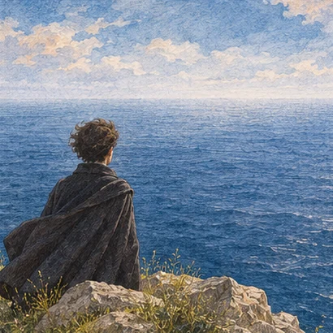

Lezione 3 di 8 · La forma
Le figure retoriche
Come fanno le parole a farci vedere o sentire qualcosa?


Dalla frase all’immagine
Segui lo sguardo della figura verso il mare. Con gli occhi cerchi un confine; sulla pagina, quel mare dà un’immagine all’immensità in cui si perde il pensiero. Chiamiamo metafora questo trasferimento di significato. Prova ora con un’altra immagine: che cosa senti se dico «la classe è un alveare»?
La frase supera il verso
Leggi «interminati / Spazi». La voce raggiunge il margine del primo verso mentre l’aggettivo attende ancora il suo nome. Questo scarto tra verso e sintassi è un enjambement. Qui il pensiero sembra spingersi oltre il margine della pagina.
Espressione«La classe è un alveare».
suggerisce →
ImmagineSenti quasi un ronzio.
rivela la →
MetaforaUn ambiente prende i tratti di un altro.
Piccolo repertorio · esempi costruiti
| Figura | Esempio | Che cosa accade |
|---|---|---|
| Similitudine | La classe ronza come un alveare. | «Come» rende esplicito il paragone. |
| Personificazione | Il vento bussa alla porta. | Il vento compie un gesto umano. |
| Allitterazione | Frusciano fresche fronde. | Il ritorno di «fr» evoca un fruscio. |
| Anafora | Qui aspetto. Qui ricordo. | La ripresa iniziale insiste sul luogo. |